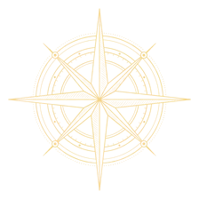

Stand on a spot you can find on the map, pick yourself, then click that spot on the map. Walk to a second spot at least 300 m away to the side AND up or down the map, and click it there. Copy the result into livemap/maps.json.
livemap/maps.json